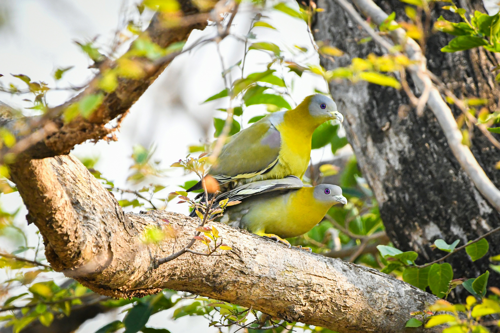

The Yellow-Footed Green Pigeon is a colourful fruit-eating pigeon with predominantly green plumage, yellow feet, and distinctive patches of yellow, orange, and grey on the wings and body. It spends most of its time in trees, where it feeds on fruit, berries, and figs. It is generally quiet and can be difficult to spot among foliage despite its attractive colours. Compared with the similar Spotted Dove, it is distinguished by the combination of features described above. Its preference for forests, woodland, gardens, plantations, orchards, and large trees also helps separate it from species that use different habitats. Its characteristic behaviour, including arboreal and usually feeds quietly in fruiting trees, often in small groups, provides another useful field clue. Taken together, these differences make it easier to distinguish from similar species when the bird is seen clearly.